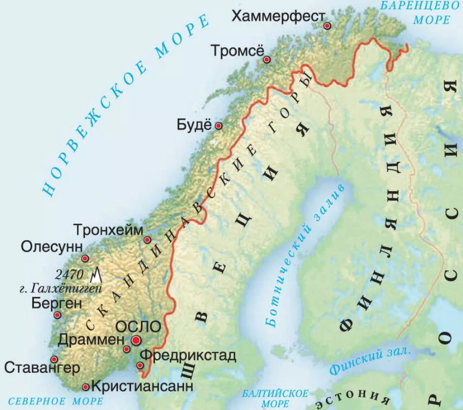

Государство в Северной Европе, располагающееся в западной части Скандинавского полуострова и на огромном количестве прилегающих мелких островов, а также архипелаге Шпицберген, островах Ян-Майен и Медвежий в Северном Ледовитом океане.
Столица Норвегии и резиденция правительства — Осло.

Материковая часть Норвегии расположена между 57° и 72°[10] северной широты и 4° и 31° восточной долготы и
простирается на 1770 км. Её территория тянется узкой полосой (самая широкая часть — менее 420 км) вдоль
северо-западного побережья Скандинавского полуострова и включает в себя все острова, островки и скалы, находящиеся в
её территориальных водах.
С востока и юго-востока Норвегия граничит со Швецией (на протяжении 1630 км), Финляндией (736 км) и Россией (196
км). С северо-запада её омывает Норвежское море, с северо-востока — Баренцево море, а с юга — Северное море.
Протяжённость береговой линии составляет 25 148 км.
Некоторые острова, принадлежащие этому государству, находятся на большом удалении от Скандинавского полуострова: